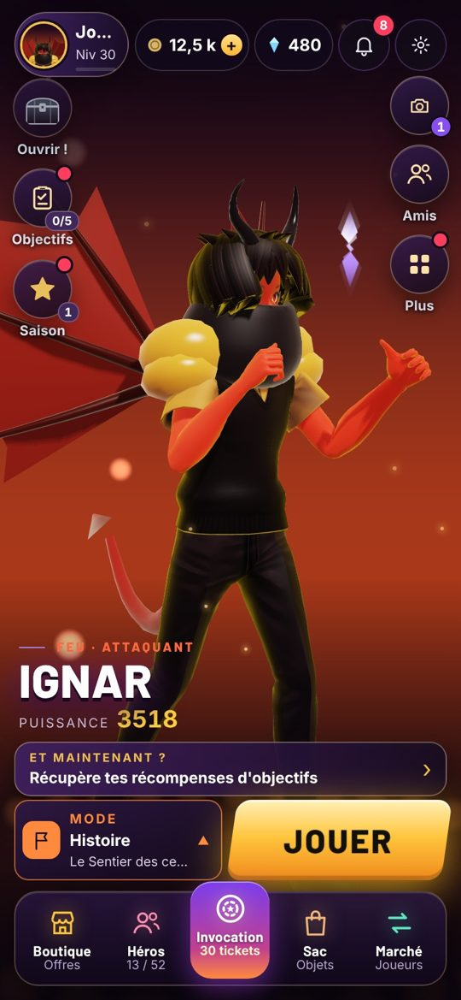
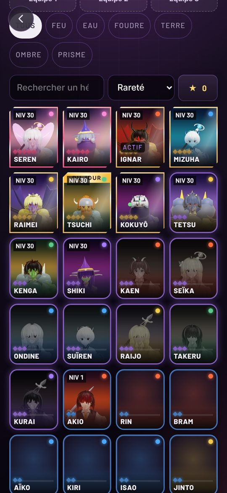
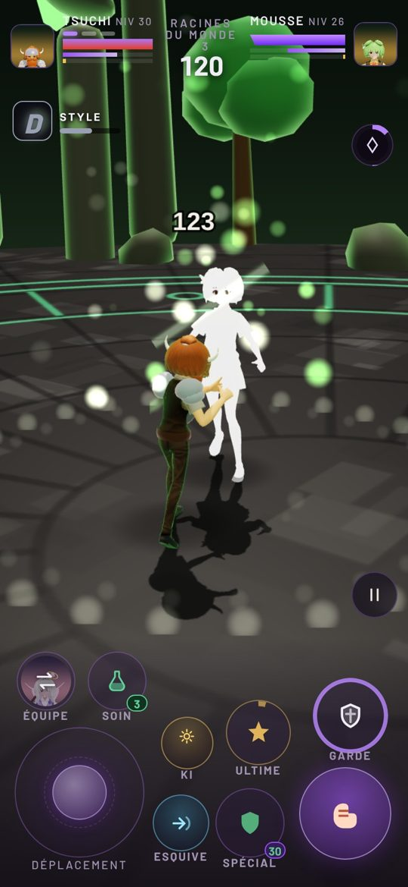
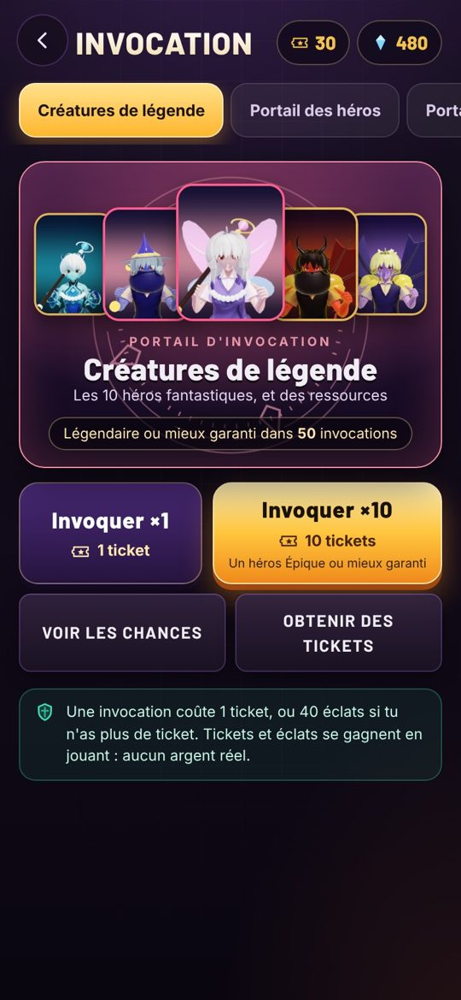
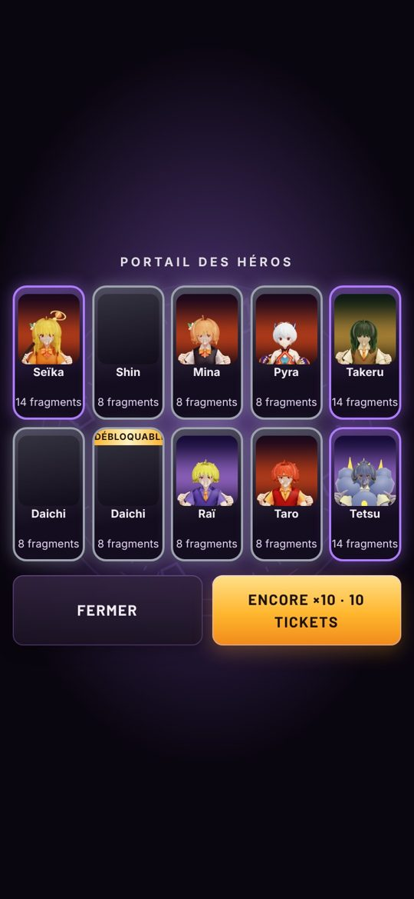
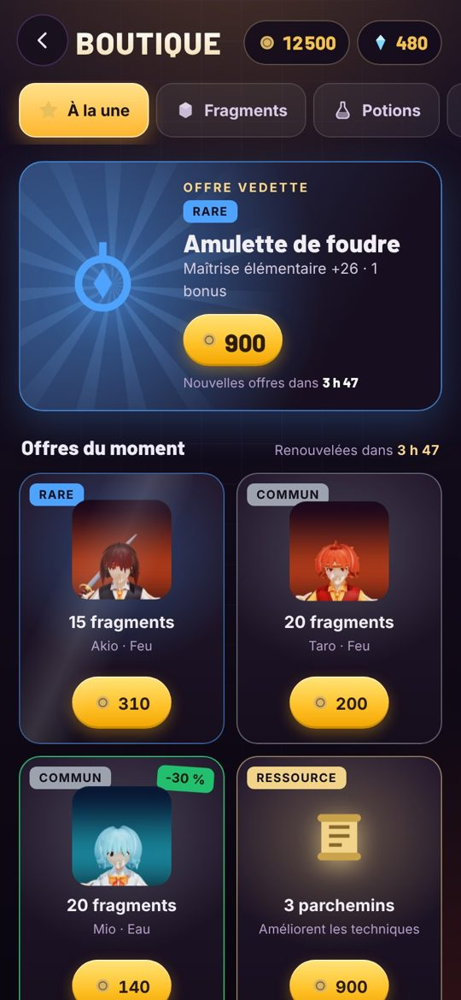
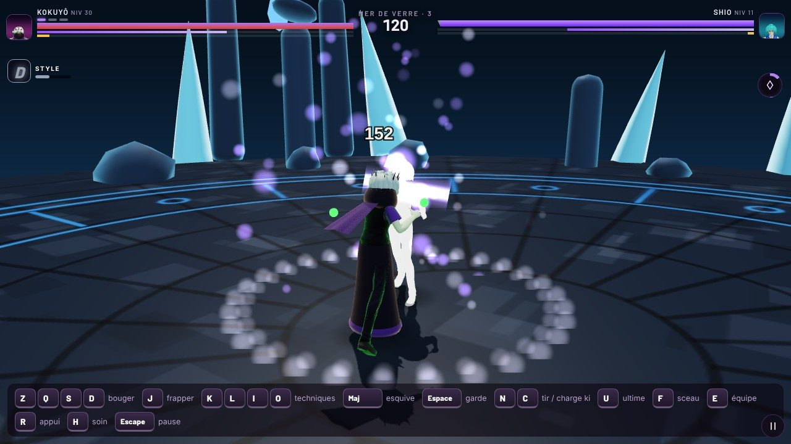

Un jeu de combat en 3D, gratuit, à jouer directement dans le navigateur. 99 héros à collectionner, tous des créatures différentes. Invocations avec des tickets gagnés en jouant.
JOUERSur téléphone et sur PC · sans téléchargement · sans argent réelUn aperçu en images des menus, des héros et des combats.
Prises dans le jeu, sans retouche.






